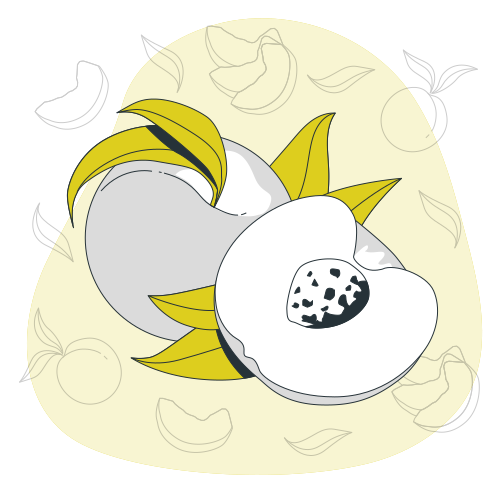

A agricultura sustentável é um sistema de produção agrícola que visa equilibrar a produção de alimentos, a preservação dos recursos naturais e a proteção do meio ambiente. Ela busca promover a saúde do solo, a conservação da água, a biodiversidade, além de considerar os aspectos sociais e econômicos.
Existem diversos conceitos básicos relacionados à agricultura sustentável. Alguns deles incluem:
O solo é um dos principais recursos na agricultura, e seu manejo adequado é essencial para a sustentabilidade. Práticas como rotação de culturas, plantio direto, cobertura vegetal e adubação orgânica ajudam a preservar a fertilidade do solo, evitando sua degradação.
A água é um recurso precioso, e seu uso consciente é fundamental na agricultura sustentável. A utilização de técnicas como irrigação por gotejamento, captação e reutilização da água da chuva e o manejo correto da irrigação ajudam a minimizar o desperdício e garantir o uso sustentável da água na agricultura.
Em vez de depender exclusivamente de pesticidas químicos, a agricultura sustentável busca utilizar métodos de controle biológico de pragas. Isso envolve o uso de insetos benéficos, como predadores naturais, e técnicas de manejo integrado de pragas, reduzindo o uso de produtos químicos e minimizando os impactos negativos ao meio ambiente.

Além desses conceitos, existem diversas práticas agrícolas sustentáveis que podem ser implementadas, tais como:
· Agrofloresta: Consiste na combinação de árvores, arbustos, culturas agrícolas e criação animal em um sistema integrado e sustentável.
· Agricultura orgânica: Utilização de técnicas que excluem o uso de fertilizantes químicos e pesticidas sintéticos, favorecendo a saúde do solo e a produção de alimentos mais saudáveis.
· Rotação de culturas: Alternância de diferentes culturas em uma mesma área, promovendo a melhoria da fertilidade do solo e reduzindo a incidência de pragas e doenças.
· Integração lavoura-pecuária-floresta (ILPF): Sistema que combina a produção de lavouras, criação de animais e plantio de árvores, visando benefícios econômicos, ambientais e sociais.
· Agricultura de conservação: Práticas que visam reduzir o revolvimento do solo, como o plantio direto, mantendo a cobertura vegetal e minimizando a erosão.
.png)

Copyright © FeiraSolidária